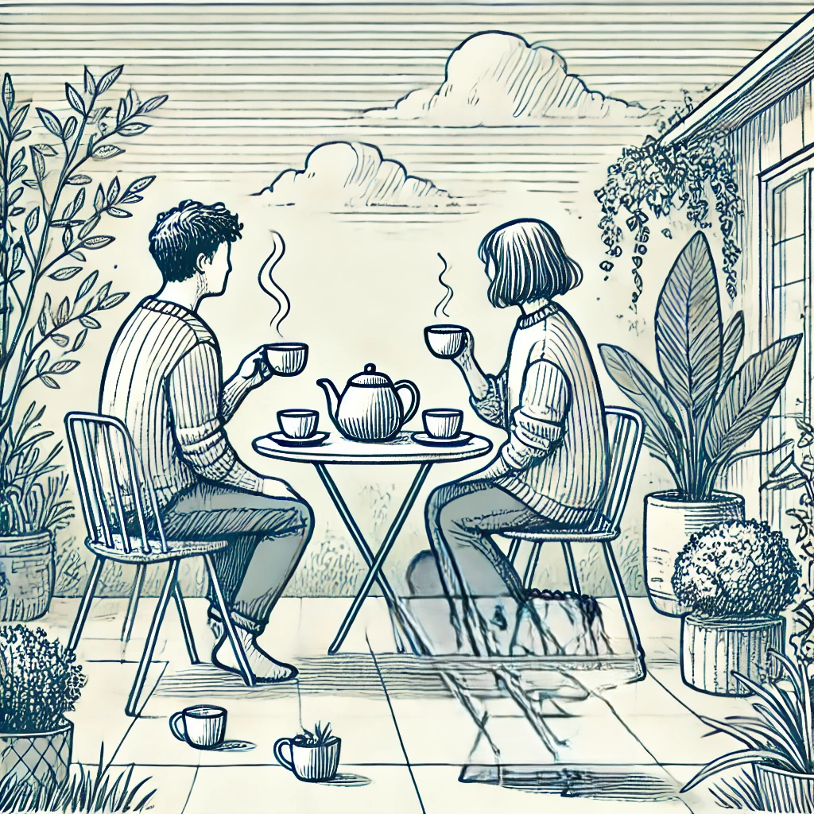

The sphere holds an archive image from the practical growing journey behind the project.
Long history: Agroforestry is not new; it is one of humanity's oldest land-use patterns.
Examples: Forest gardens, wood pasture, orchard grazing, shaded coffee and cacao, and hedgerow farming all combine productivity with ecological structure.
J. Russell Smith: Argued for tree crops on vulnerable land and helped frame agroforestry as an answer to erosion and degraded soils.
Robert Hart: Showed in Britain that layered forest gardening could be productive, beautiful, and small-scale.
Martin Crawford: Helped translate forest gardening into practical UK experimentation and public education.
Evidence base: Shelterbelts, riparian planting, silvopasture, and alley cropping are now valued for resilience as well as yield.
Why it matters: British farming increasingly needs systems that hold water, reduce wind stress, store carbon, and diversify income.
Natural fit: Wales already has the ingredients for agroforestry: livestock farms, hedgerows, wet valleys, steep ground, and a temperate rainforest fringe.
Manifestation: The Welsh version is likely to mean shelter trees, riparian woodland, orchard pasture, and habitat corridors rather than industrial monoculture.
A history of farming with trees, and why that history matters in Britain and West Wales now.
Agroforestry is best understood not as a fashionable add-on, but as the rediscovery of a very old truth: land is often healthiest when trees, animals, water, and crops are designed to support one another.
Long before the term agroforestry existed, communities around the world were already practicing it. Indigenous forest gardens in the tropics, Mediterranean wood pasture, orchard meadows, coppice systems, and grazed commons all worked from the same principle: trees are not obstacles to food production, but part of the farm itself. They shade animals, build soil, draw up nutrients, slow wind, hold water, host pollinators, and provide fuel, fruit, fodder, timber, and shelter.
In that sense, agroforestry is not a novelty but a recovery of relationship. It emerged wherever people paid close attention to ecology and understood that permanent fertility usually comes from structure, diversity, and time rather than repeated simplification.
In the twentieth century, several thinkers helped give this ancient practice a modern vocabulary. The American geographer J. Russell Smith, especially through Tree Crops in 1929, argued that fragile slopes should grow perennial tree crops rather than be forced into erosive annual agriculture. His work helped shape the idea that trees could be a rational answer to soil loss, not just a romantic one.
In Britain, Robert Hart became one of the key pioneers of forest gardening. On a small site in Shropshire, he showed that a layered planting system of canopy, shrub, herb, groundcover, root, and climber species could create a highly productive edible landscape. Hart's importance lies not only in what he grew, but in the way he changed imagination: he made it easier to picture a British agroforestry system that was intimate, ecological, and human-scaled.
That practical lineage was carried forward by figures such as Martin Crawford and the Agroforestry Research Trust, whose work helped translate theory into species trials, public education, and replicable UK practice. Together these pioneers showed that agroforestry could succeed across scales: from the homestead garden to the working farm.
For a long time, modern British agriculture treated trees as separate from productive land: woods were woods, fields were fields. But climate pressure, biodiversity loss, and declining soil health have pushed a different view back into the foreground. Agroforestry in the UK now appears in several practical forms: silvopasture for grazing livestock among trees, alley cropping on arable land, riparian planting beside watercourses, shelterbelts against wind exposure, and wood pasture systems that blend browsing, grass, and canopy.
The strongest British successes are often not flashy. They are quieter gains that accumulate year after year: lambs protected from exposure, cattle shaded in summer, streams kept cooler, fields less waterlogged after storms, pollinators returning along tree lines, and farms gaining a second or third income stream. Agroforestry works in the UK precisely because it does not ask farmers to stop producing; it asks how production can become more stable, more ecological, and less brittle.
Wales is particularly well placed for agroforestry. Much of the country is pastoral, wet, sloping, and exposed to Atlantic weather. These are exactly the conditions in which trees become functional partners. Carefully placed shelter trees can reduce wind stress on stock; riparian planting can stabilize streams and reduce sediment loss; hedgerow expansion can reconnect habitat; orchard pasture can diversify smaller holdings; and native broadleaf corridors can help the surviving fragments of the Celtic rainforest breathe outward into the farmed landscape.
In Welsh terms, agroforestry should not mean blanketing the land in commercial blocks. It should mean fitting trees into the logic of place: alder and willow in wetter ground, oak and birch where long-term habitat structure is needed, shelter lines on exposed pasture, productive edges around homesteads, and wooded corridors that connect valley, stream, hedge, and hill. In a landscape like the Dyfi and wider West Wales, that approach offers both ecological repair and cultural continuity.
For this project, the history of agroforestry is not background reading. It is a reminder that rebuilding Welsh tree cover, habitat corridors, and small-scale abundance is part of a much older tradition of working with land rather than against it.

Project archive image
An image kept in the sphere as a visual anchor for the practical, lived side of the land journey.